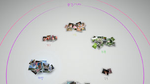

사진 정리하기
사진 분류하기
선택한 이벤트의 사진을 다음의 항목으로 분류합니다. 이벤트를 선택한 후  버튼을 눌러
버튼을 눌러  (분류)를 선택합니다. 분류한 후 다시 한번 (분류)를 선택하면 분류된 사진을 다시 한번 분류할 수 있습니다.
(분류)를 선택합니다. 분류한 후 다시 한번 (분류)를 선택하면 분류된 사진을 다시 한번 분류할 수 있습니다.
| 시간 | 촬영 일시로 분류합니다 |
|---|---|
| 인원수 | 피사체의 얼굴수, 크기로 분류합니다 |
| 연령별 | 사진 속 인물의 상대적 나이로 분류합니다 |
| 표정 | 사진 속 인물의 표정으로 분류합니다 |
| 컬러 | 사진의 색감으로 분류합니다 |
| 카메라 타입 | 촬영한 카메라로 분류합니다 |
| 게임 | 게임 타이틀별로 분류합니다 |
| 앨범 | XMB™의  (사진)에서 설정한 앨범별로 분류합니다 (사진)에서 설정한 앨범별로 분류합니다 |
알아두기
- 분류 항목을 선택하는 화면에서 [모두 선택]을 체크하면 라이브러리 영역에 있는 모든 사진이 분류의 대상이 됩니다.
- 사진에 따라서는 정확히 분류되지 않는 경우가 있습니다.
- 분류한 사진으로 재생 목록을 만들 수 있습니다.
분류의 예: 미소 짓고 있는 아이 사진찾기
1. |
|
|---|---|
2. |
[어린이]로 분류된 사진을 선택한 후 |
3. |
|
분류의 예: 파란 하늘 사진 찾기
1. |
|
|---|---|
2. |
[풍경/기타]로 분류된 사진을 선택하여 |
3. |
 |
사진 삭제하기
삭제할 사진 또는 앨범을 선택한 후 버튼을 눌러 (삭제)를 선택합니다.
알아두기
삭제한 사진은 PS3™의 본체 스토리지에서도 삭제됩니다.